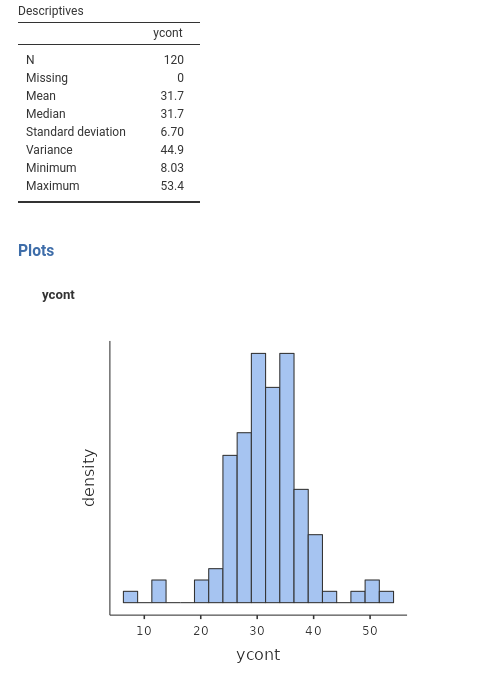

A The \(R^2\)’s
Contrary to what many people think, almost all effect sizes and their corresponding inferential tests in the linear model’s realm are based on some sort of model-comparison technique (Judd, McClelland, and Ryan 2017). The \(R^2\) is one of them.
Assume you have a dependent variable that you want to model, meaning that you want to recap its scores by expressing them with some predicted values. For the moment, assume the variable to be continuous. If you only have the variable scores available, without any other information, your best guess is to use the mean as the most likely value. Keeping up with our toy example, assume that ycont in the dataset was the number of smiles for a given time done by our participants in a bar. If you only have the ycont variable, your best bet would be that the next customer will smile, on average, \(\hat{y}=31.7\) times, because that is the expected value (mean) of the variable distribution. So we say, whoever comes next in the bar, they will smile \(\hat{y}=31.7\) times on average.

What I am saying translates into the most simple linear model, the mean model:
\[ \hat{y_i}=\bar{y}\]
If we use the mean as our expected value, that is our model, we have an approximation error (\(\sigma^2\)), which amounts to the discrepancy between the predicted values (the variable mean) and the actual observed values. Because errors larger or smaller than the actual values are the same, we can square the errors, and compute the average error across cases (forget about the minus 1, it is not important now).
\[ \sigma^2_{\bar{x}}={\Sigma{(y_i-\hat{y})^2} \over {N-1}}\]
When we associate an independent variable with a dependent variable in a linear model, we are seeking a better account of the differences in the scores of the dependent variable. It is like answering the question “how many smiles would a randomly taken person from our sample do?”, with “it depends on how many beers they had”. If it was only for the beers, the predicted values would be
\[ \hat{y_i}=a+bx_i\] and the error we make would be: \[ \sigma^2_r={\Sigma{[a+bx_i-y_i]^2} \over {N-1}}\] How good is this error variance associated with the regression? Well, it depends on how big was the error without the regression, that is using the mean as the only predictor, namely \(\sigma^2_{\bar{x}}\).
So we take the difference between these possible error variances, and we know how much the regression reduced the error
\[ {\sigma^2_{\bar{x}}-\sigma^2_r \over \sigma^2_{\bar{x}}}=R^2\] The \(R^2\) (and its variants) is the amount of error that we reduce in our predictions thanks to our model as compared to not using our model. In other words, is the comparison of our model error with the error of a model without the independent variable(s).
A.1 Commuting \(R^2\)
Let’s assume you commute to the university every day and it takes 60 minutes (\(T_0\)) to get there from your home, following one route. A friend of yours (probably a know-it-all colleague), suggests an alternative route. You follow the lead, and you got to your department in 50 minutes (\(T_c\)). Nice, but what was your colleague’s contribution to your happiness (assuming you do not enjoy commuting)? We can say that it was 10’, which is given by \(60-50=10\). Is that a lot? Well, it depends on the overall commuting time, because saving 10’ from Lakeville to Berwick (they are in Nova Scotia, CA, 16 minutes apart) is different than saving 10’ traveling from Milan (Italy) to Manila (Philippines), which takes around 17 hours. Thus, we can compute our colleague’s contribution to our happiness as:
\[ {(T_0-T_c) \over T_0}={10 \over60}\]
which simply means that our colleague made us save 1/6 of our journey time. This is our colleague \(R^2\). In statistical terms, we have the error variance without the model (\(\sigma_{\bar{x}}^2\)), the error variance of the model \(\sigma_{r}^2\), and we have:
\[ R^2={\sigma^2_{\bar{x}}-\sigma^2_r \over \sigma^2_{\bar{x}}}\]
which is how much our model “saved” of (or reduced) our error. That is called the Proportion of Reduced Error (Judd, McClelland, and Ryan 2017).
A.2 Variance explained
So, why is the \(R^2\) index interpreted as proportion of variance explained? The reason is simply that a portion of the dependent variable variance can be associated with the variance of the independent variable(s), and thus we know why is there: because for a certain part (equal to \(R^2\)) people are different in the number of smiles because they are different in their number of beers.
You can get a broader view of this topic by consulting Judd, McClelland, and Ryan (2017). If you get excited by this, you can consult Searle and Gruber (2016), which explains that almost any test we are familiar with can be cast as a model comparison test.